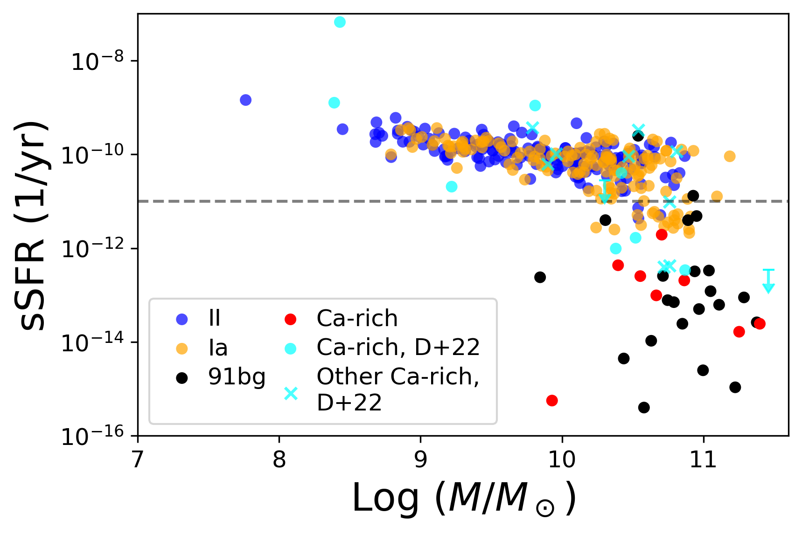

Characterizing the host galaxies and delay times of Ca-rich gap transients vs 91bg-like SNe and normal Type Ia SNe
Adapted from De+(2020), a sample of 8 Ca-rich gap transients discovered with ZTF. Note the typically large offsets between the explosion (crosshair) and host galaxy.

I analyzed the host environments of hydrogen-poor Ca-rich gap transients, a faint, fast-evolving class of supernovae potentially arising from a mass-gaining WD undergoing a merger. Using data from the Zwicky Transient Facility (ZTF) Census of the Local Universe (CLU) experiment , I constructed four supernova samples—Ca-rich, Type Ia, 91bg-like (an unusual subclass of Type Ia), and Type II—and identified their host galaxies. I derived stellar masses and specific star formation rates (sSFRs) through SED fitting and photometric estimates, finding that Ca-rich and 91bg-like hosts occupy a similar parameter space of high mass and low sSFR (i.e., quiescent), distinct from Type Ia and II hosts. I constructed delay-time distributions (DTDs) for all four populations—the first such analysis for Ca-rich transients—finding peak delay times of ~10^4 Myr for Ca-rich and 91bg-like SNe, longer than for the other samples. These results suggest that Ca-rich gap transients may originate from old WD binaries and share the progenitor channel of 91bg-like SNe, which likely result from the merger of a CO WD and a He WD.
The stellar masses and specific star formation rates (sSFR) of the galaxy hosts of 4 classes of transients (Ca-rich gap transients, 91bg-like SNe, normal SNe Ia, Type II SNe). The horizontal line designates the fiducial boundary between star-forming and quiescent galaxies. 